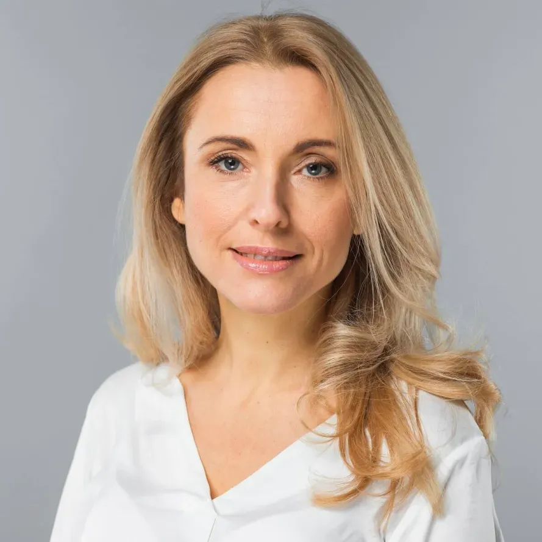

Tengo 35 años, Soy Arquitecta
Arquitecta con más de 10 años de experiencia en diseño arquitectónico, planificación urbana y ejecución de proyectos residenciales y comerciales. Especializada en arquitectura sostenible y diseño bioclimático. Alta competencia en herramientas digitales como AutoCAD, Revit y SketchUp. Comprometida con la innovación, la estética y la funcionalidad en cada proyecto.
Universidad Nacional de Colombia – Sede Medellín
2007-2012
Universidad Pontificia Bolivariana
2015